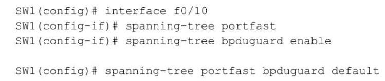

-
A beállítások elérése
-
Alapvető beállítások
-
Interfészek beállítása, IP címek
-
Konfiguráció kezelése
-
Portbiztonság
-
VLAN -ok
-
VTP - virtuális trunk protokoll
-
RSTP - Rapid Spanning Protocol
-
Statikus forgalomirányítás
-
Dinamikus forgalomirányítás
-
Forgalomszűrés (ACL)
-
DHCP
-
Címfordítás (NAT)
Konzolos kapcsolat lehetőségei
-
Kapcsolódás közvetlenül, konzol kábellel
Ekkor a készülék közelében kell lennünk. A beállításokhoz RS232 szabványú, soros porton keresztül férhetünk hozzá. Windows alatt az eszközkezelőben COM és egy szám alatt találjuk. A fizikai csatlakozó 9 pólusú apa, DB9 típusú.
Ha nincs az alaplapon (pl. laptop), USB -soros átalakító kábelt használhatunk. Ekkor USB-SERIAL jelenik meg az eszközkezelőben.


A készüléken lévő console feliratú porthoz csatlakozik a konzol, más néven rollover kábel, melynek másik vége RJ45 típusú, ugyanaz, mint a hálózati kábel csatlakozója. Gyakran kék színű, a Packet Tracerben is az.


-
Szoftverek
A program, amivel csatlakozni lehet a terminál emulátor. Pl. Putty , TeraTerm , SecureCRT , Tabby
Az emulátorban csatlakozás előtt be kell állítani a soros port tulajdonságait: Ennek módja programonként eltérő, ezen kívül lehet még színeket, betűtípusokat is állítani, elmenteni ezeket a beállításokat.
- Soros port száma: COM1
- Sebesség: 9600 (baud)
- Adatbitek száma: 8
- Stop bitek száma: 1
- Paritás: nincs
- Átvitelvezérlés (flow control): nincs
Más gyártmányú készülékek esetén más beállítások kellhetnek.


-
Távoli hozzáférés
Az előző programok alkalmasak arra is, hogy hálózaton keresztül férjünk hozzá a beállításokhoz. Ehhez először a készüléken be kell állítani annak IPv4 vagy IPv6 címét, valamint a hozzáférés protokollját, ami Telnet (nem ajánlott), vagy SSH lehet (titkosított, ajánlott). A programban utána ezt kell beállítani.

-
Parancssor módjai
Miután kapcsolódtunk, az eszköz nevét látjuk, ami alapértelmezetten Switch, vagy Router. Ezt követi az üzemmódjelző - > vagy # karakterek:
- Router> - Felhasználói mód, beállítások megtekintése, távoli kapcsolat (telnet, ssh) más eszközökre.
- Router>enable - Átlépés privilegizált módba.
- Router# - Privilegizált mód, előző mód + idő, dátum beállítás, lényegi működést nem befolyásoló beállítások.
- Router#configure terminal - Továbblépés globális konfigurációs módba.
- Router(config)# - Globális konfigurációs mód, a készülék egészére vonatkozó beállítások elérése, pl. állomásnév.
- Router(config)#interface g0/0 - Továbblépés interfész alkonfigurációs módba.
- Router(config-if)# - Alkonfigurációs mód, a kötőjel utáni szöveg utal rá, mit állítunk be. Pl. -if interfész beállítása, -line vonal beállítása, stb. a készülék egy kiválasztott részének, funkciójának működése állítható.
A parancssor kezelésére vonatkozó további parancsok, billentyűkombinációk:
- ? - Help, kilistázza az adott módban elérhető parancsokat.
- parancs ?, parancs érték ? - Help, kilistázza a parancs mit vár beállítási értéknek. Több érték esetén így végig lehet lépdelni a paramétereken..
- parancskezdet? - Help, kilistázza az adott módban elérhető kezdetű parancsokat, pl. a te? a telnet terminal test parancsokat ajánlja fel.
- parancskezdetTAB - Kiegészíti az adott módban elérhető kezdetű parancsokat, ha az a kezdetből egyértelmű, így nem kell begépelni az egészet. TAB billentyű nélkül is elfogadja a rövidítést. (haladóknak...)
- parancskezdet? - Help, kilistázza az adott módban elérhető kezdetű parancsokat, pl. a te? a telnet terminal test parancsokat ajánlja fel.
- exit - Visszalép eggyel a parancsszintek között.
- end, vagy Ctrl+z- Visszalép privilegizált # módba.
- do privilegizált módú parancs - Konfig módban privilegizált módú parancs végrehajtása, pl. show parancsok megtekintése beállítás közben visszalépés nélkül. Pl. Router(config)#do show version
Alapvető beállítások
-
Hostname beállítása
A router neve legyen R1!
- Router>enable
- Router#configure terminal
- Router(config)#hostname R1
- R1(config)#
-
Jelszavak beállítása
A konzol jelszó beállítása konzol1234 -re
- Router(config)#line con 0
- R1(config-line)#password konzol1234
- R1(config-line)#login
- R1(config-line)#
A privilegizált mód jelszavának beállítása priv1234 -re
- Router(config)#enable password priv1234
- R1(config-line)#
A privilegizált mód jelszavának beállítása priv1234 -re tikosított módon
- Router(config)#enable secret priv1234
- R1(config-line)#
A távoli hozzáférés (VTY vonalak) jelszavának beállítása tavoli1234 -re.
16 ilyen vonal van (VTY 0-15), most az első ötöt állítjuk be.- Router(config)#line vty 0 4
- R1(config-line)#password tavoli1234
- R1(config-line)#login
- R1(config-line)#
Jelszavak titkosítása
- R1(config)#service password-encryption
-
Üzenetek
Bejelentkezési üzenet, sikeres belépéskor írja ki.
- R1(config)#banner login "Udv!"
Napi üzenet, sikeres csatlakozáskor írja ki legelőször, általában jogi tudnivalók.
- R1(config)#banner motd "Belepes csak arra jogosultaknak"
-
Egyéb kényelmi beállítások
Hibás parancs keresésének letiltása.
- R1(config)#no ip domain-lookup
Log üzenetek, események ne szakítsák félbe az éppen bevitt parancsot.
- R1(config)#logging synchronous
Interfészek beállítása, IP címek, duplex
-
Ethernet interfész IPv4 címének beállítása
Beállítás előtt érdemes ellenőrizni az interfészek nevét, számozását, mivel moduláris eszközöknél ez attól függ, melyik helyre van az interfészkártya behelyezve.
- R1#show ip interface brief

- R1#configure terminal
- R1(config)#interface fastethernet0/0/0
- R1(config)#description Marketing halozat
- R1(config-if)#ip address 192.168.0.14 255.255.255.0
- R1(config-if)#no shutdown
- %LINK-5-CHANGED: Interface FastEthernet0/0/0, changed state to up
- R1(config-if)#
- R1 (config-if)#duplex auto | half | full
- R1 (config-if)#speed auto | 10 | 100
- R1(config-if)#exit
IPv4 cím beállítása. Megadható egy leírás (description) is az interfészhez.
Duplex, sebesség beállítási lehetőségek:
- R1#show ip interface brief
-
VLAN interfész beállítása
IPv4 cím beállítása VLAN interfészen (kapcsolón is):
- S1#configure terminal
- S1(config)#interface vlan1
- S1(config-if)#ip address 10.10.10.100 255.255.255.0
- S1(config-if)#no shutdown
- %LINK-5-CHANGED: Interface Vlan1, changed state to up
- S1(config-if)#
-
IPv4 cím beállítása soros interfészen
IPv4 cím beállítása soros interfészen. A kábel DCE felőli interfészén órajelet kell beállítani, és csak ezen az oldalon!
- R1#configure terminal
- R1(config)#interface serial 0/0/1
- R1(config)#description Soros kapcsoalt R2 fele
- R1(config-if)#ip address 10.10.78.1 255.255.255.252
- R1(config-if)#clock rate 64000
- R1(config-if)#ip address 10.10.78.1 255.255.255.252
- R1(config-if)#no shutdown
- %LINK-5-CHANGED: Interface Serial 0/0/1, changed state to up
- R1(config-if)#
-
Loopback interfész beállítása
Loopback interfész a beállítással jön létre, többet is létrehozhatunk.
- R1(config)#interface loopback 0
- R1(config-if)#ip address 100.0.0.1 255.255.255.255
- R1(config-if)#no shutdown
-
IPv6 cím beállítása
IPv6 címnél, ha link local típusút állítunk be, azt külön meg kell adni valamint nem kell megadni a prefixet!
- R1(config)#interface GigabitEthernet0/0
- R1(config-if)#ipv6 address fe80::1 link-local
- R1(config-if)#ipv6 address 2a01:fc00::1/64
- R1#show ipv6 interface brief
Ellenőrzés:
Koniguráció ellenőrzése, mentése, törlése
-
Futó konfiguráció
Az aktuális beállítások megtekintése:
- R1#show running-config
-
Indító konfiguráció (NVRAM -ba mentett)
Az elmentett beállítások megtekintése:
- R1#show startup-config
-
Beállítások törlése
Az indító beállítások törlése:
- R1#write erase
- R1#delete nvram:startup-config
- R1#delete vlan.dat
- R1#reload
VAGY
Ha van VLAN is, azt külön kell törölni:
Ha gyári beállításokat szeretnénk, újra kell indítani:
-
Beállítások másolása TFTP szerverre
Az indító beállítások törlése:
- R1#write erase
- R1#delete nvram:startup-config
- R1#delete vlan.dat
- R1#reload
VAGY
Ha van VLAN is, azt külön kell törölni:
Ha gyári beállításokat szeretnénk, újre kell indítani:
Portbiztonság
-
Hiányzó tartalom
Hiányzó tartalom
-
Hiányzó tartalom
Hiányzó tartalom
VLAN-ok
-
Megadhatom a saját privát kulcsomat?
VLAN-oknál nem szükséges és nem is ajánlott a saját privát kulcsodat megadni. A VLAN-ok a hálózati szegmentálás eszközei, és a hozzáférés kontrollálása inkább a hálózati eszközök (pl. switch-ek) konfigurálásával történik, nem a kulcsokkal. Ha titkosított kapcsolatot kell létrehoznod egy eszközzel, például VPN-en keresztül, akkor ott jönnek jól a privát kulcsok, de maga a VLAN kezelés nem igényel privát kulcsokat.
-
Eltűntek a fájljaim! Hogyan kaphatom vissza őket?
Ha VLAN környezetben tűntek el a fájljaid, valószínű, hogy egy hálózati tárolóról (pl. NAS vagy szerver) vagy a felhőből hiányoznak. Ellenőrizd a szerver vagy tárolórendszer biztonsági mentéseit, és kérd a rendszergazda segítségét. Ha felhőalapú tárolóról van szó, nézd meg a törölt fájlok mappáját, vagy kérj visszaállítást. A VLAN maga nem okozhat fájleltűnést, de hálózati problémák miatt előfordulhat, hogy a fájlok elérhetetlenné váltak.
-
Hogyan férhetek hozzá a fiókom adataihoz?
VLAN környezetben a fiókod adataihoz úgy férhetsz hozzá, hogy először biztosítod a megfelelő hálózati hozzáférést a kívánt VLAN-hoz. Ezután be kell jelentkezned a rendszerbe a felhasználóneveddel és jelszavaddal. Ha szükséges, VPN-en keresztül kell csatlakoznod, és ellenőrizned kell, hogy rendelkezel a megfelelő jogosultságokkal. Ha kétfaktoros hitelesítés van beállítva, egy második megerősítést is szükséges végrehajtani.
-
Hogyan tudom ellenőrizni, hogy más keresőmotorok linkelhetnek-e a profilomra?
A VLAN-ok nem befolyásolják közvetlenül, hogy a keresőmotorok linkelhetnek-e a profilodra, de ha szeretnéd ellenőrizni, hogy hozzáférhetnek-e, akkor először nézd meg a saját weboldaladon a robots.txt fájlt, hogy a keresőmotorok számára mely oldalak elérhetők. A weboldaladon a noindex, nofollow meta címkék használatával megakadályozhatod, hogy a keresőmotorok indexeljék. Ezen kívül kereshetsz rá a profilodra a keresőmotorokban, hogy megnézd, megjelenik-e, és ha közösségi médián van, állíthatsz privát beállításokat, hogy csak engedélyezettek láthassák. Végül, ha saját weboldalad van, használhatod a Google Search Console vagy Bing Webmaster Tools eszközöket, hogy ellenőrizd, hogyan indexelik az oldalad.
VTP
-
Hiányzó tartalom
-
Eltűntek a fájljaim! Hogyan kaphatom vissza őket?
Ha eltűntek a fájljaid a VPT-n, először ellenőrizd a szemetet (Recycle Bin), hátha véletlenül törlődtek. Ha van biztonsági mentésed, próbáld meg onnan visszaállítani őket. Használhatsz fájl-helyreállító programokat is, mint a Recuva, hogy visszaszerezd a fájlokat. Ha ezek nem segítenek, vedd fel a kapcsolatot a VPT ügyfélszolgálatával, hátha a fájlok ideiglenesen tárolódnak, és visszaállíthatók. Ha minden kudarcot vall, egy szakértői segítség is szóba jöhet.
- Hogyan férhetek hozzá a fiókom adataihoz?
A VPT fiókod adataihoz való hozzáféréshez először jelentkezz be a felhasználóneveddel és jelszavaddal. Ha elfelejtetted a jelszót, használd a "Jelszó visszaállítása" opciót. Miután bejelentkeztél, keresd meg a "Fiók" vagy "Beállítások" menüpontot, hogy elérd a profilodat és biztonsági beállításaidat. Ha kétfaktoros hitelesítés van beállítva, akkor szükséged lesz egy kódra, amit egy másik eszközről kapsz. Ha nem férsz hozzá a fiókodhoz, vedd fel a kapcsolatot a VPT ügyfélszolgálatával, hogy segítsenek. Ezen kívül biztonsági kérdések vagy e-mail alapú visszaállítást is használhatsz.
-
Hogyan tudom ellenőrizni, hogy más keresőmotorok linkelhetnek-e a profilomra?
A VLAN-ok és a VPT rendszerek esetében, ha szeretnéd ellenőrizni, hogy más keresőmotorok linkelhetik-e a profilodat, először érdemes megnézned a profilod webhelyének metaadatait. A weboldalad HTML kódjában a metaadatok között beállíthatsz egy „robots.txt” fájlt vagy meta tag-eket, amelyek szabályozzák a keresőmotorok viselkedését. Ha azt szeretnéd, hogy a keresők ne indexeljék az oldaladat, akkor a „robots.txt” fájlba beillesztheted a megfelelő sort, például „Disallow: /”, ami megakadályozza az indexelést. Ha a profilod csak egy belső hálózaton érhető el, például VPN-en keresztül, akkor a keresőmotorok nem férhetnek hozzá, mivel azok csak a nyilvános oldalakat indexelik, így nem kell aggódnod a keresők általi linkelés miatt. Ha nyilvános profilod van, és szeretnéd látni, hogy a keresők linkelhetnek-e rá, regisztrálhatsz a Google Search Console vagy a Bing Webmaster Tools felületeken, ahol ellenőrizheted, hogy melyik keresőmotorok indexelték az oldaladat. Végül, egy egyszerű módszer annak ellenőrzésére, hogy más keresőmotorok linkelhetik-e a profilodat, ha beírod a profilod nevét vagy más kulcsszavakat a keresőbe, és megnézed, hogy megjelenik-e a találatok között. Ha nem szeretnéd, hogy a keresők indexeljék az oldaladat, akkor érdemes beállítani a robots.txt fájlt vagy meta tag-eket, hogy biztosan ne férjenek hozzá.
RSTP
-
Feladata
A feszítőfa protokollok családjának (STP,RSTP,PVST+) feladata, hogy redundáns útvonalakat tartalmazó kapcsolók összekötésénél megakadályozza a hurkok kialakulását. A hurkokban keringő szórásos üzenetek túltrahelik a hálózatot, valamint a kapcsolók CAM táblája telítődhet, mert különböző portokon is megjelenik ugyanaz a forrás MAC cím, amit felvesz oda.
-
Az RSTP működése
Az RTSP (Real-Time Streaming Protocol) egy hálózati vezérlőprotokoll, amely IP-kamerák és médiaszerverek közötti videó/audio adatfolyamok (stream) elindítására, szüneteltetésére és vezérlésére szolgál. A 554-es alapértelmezett porton működve, az RTP segítségével továbbítja a tényleges adatokat, lehetővé téve a valós idejű megfigyelést.
-
Portfast
Feladata: azzonali további modba állitás
-stp protokol kikerúlése
-végberendezéshez(pc, szerver)
-
BDPU Guard
Biztonságos megoldás a hibás konfiguráció ellen
 -
Portszerepkörök
A root port mindig a root bridge felé néz
A designated port minde ami bemeneti -> Root bridge
Nem root bridge vagy kijelőltport, így alternativ vagy blokkolt porttá válik